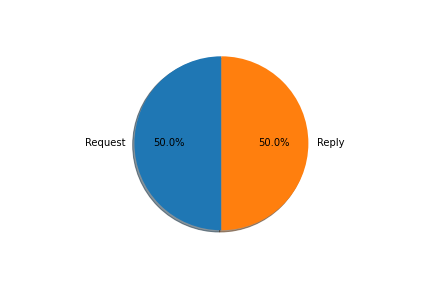

Nombre de flags [S] (SYN) = [2046]
Nombre de flag [.] (ACK) = [6961]

Nombre des requests et replys
Request = [42]Reply = [42]

Statistiques entre seq et win et ack
Nombre de seq = [8201]Nombre de win = [10766]
Nombre de ack = [8768]
Sur cette page web on va vous presenter les infomations et donnees petinentes qu'on a trouve dans le fichier a traiter(DumpFili.txt)